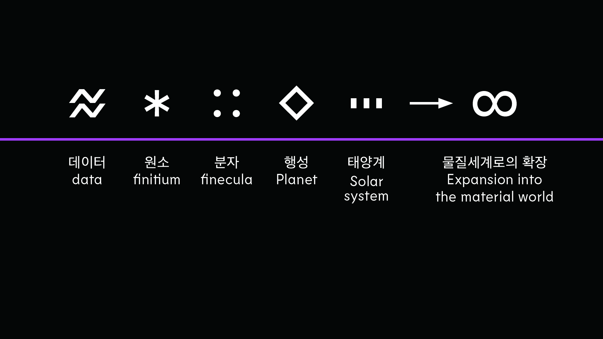

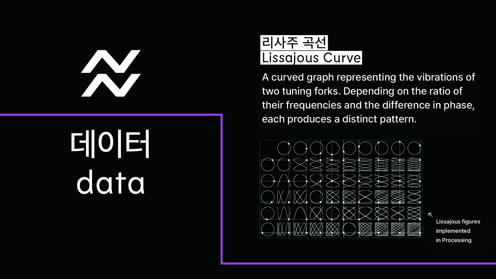
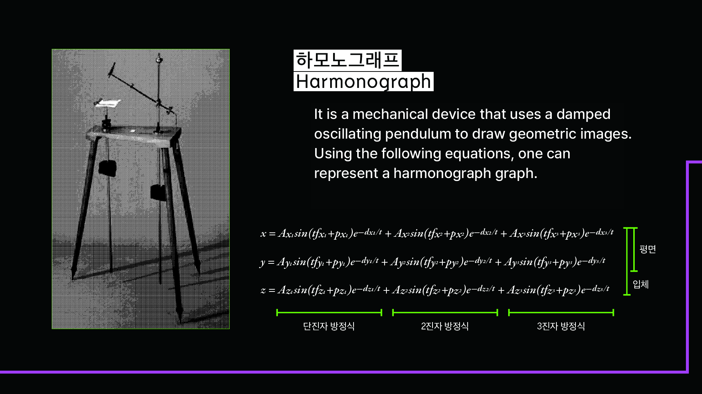
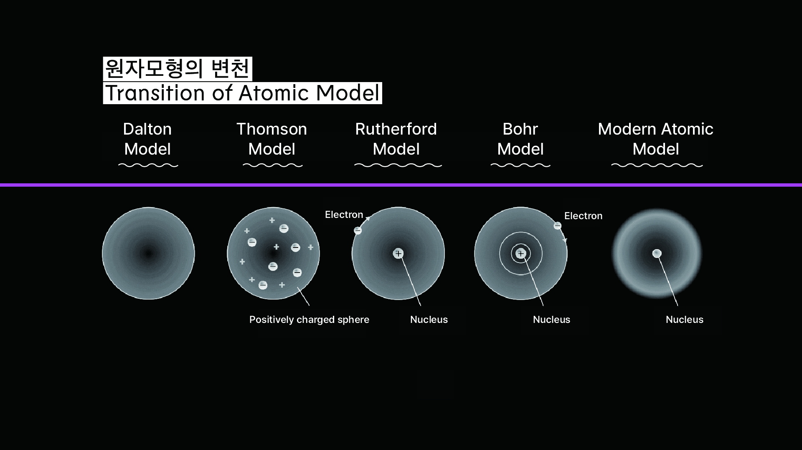
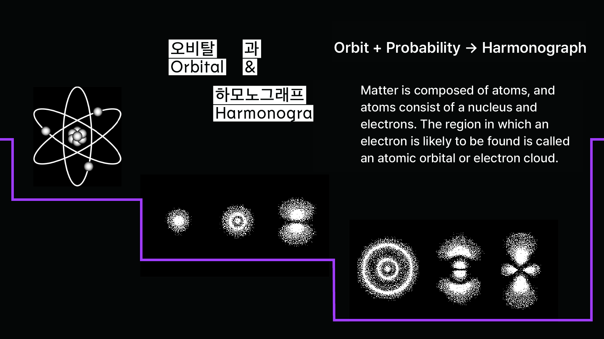
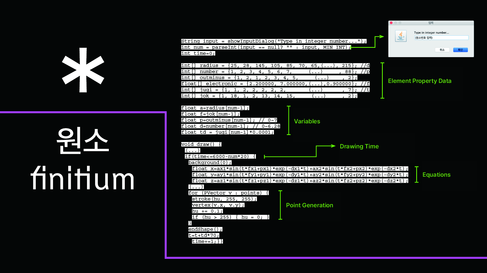
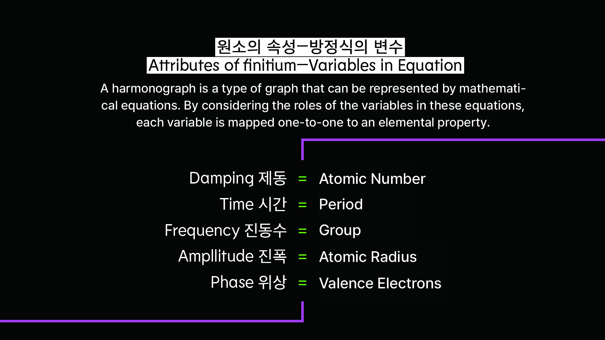
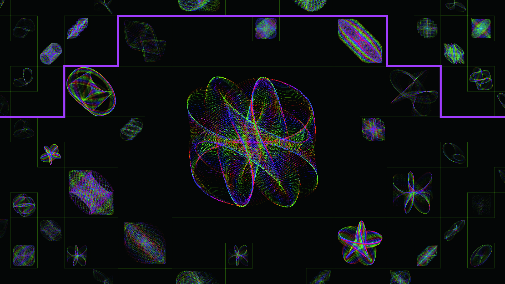
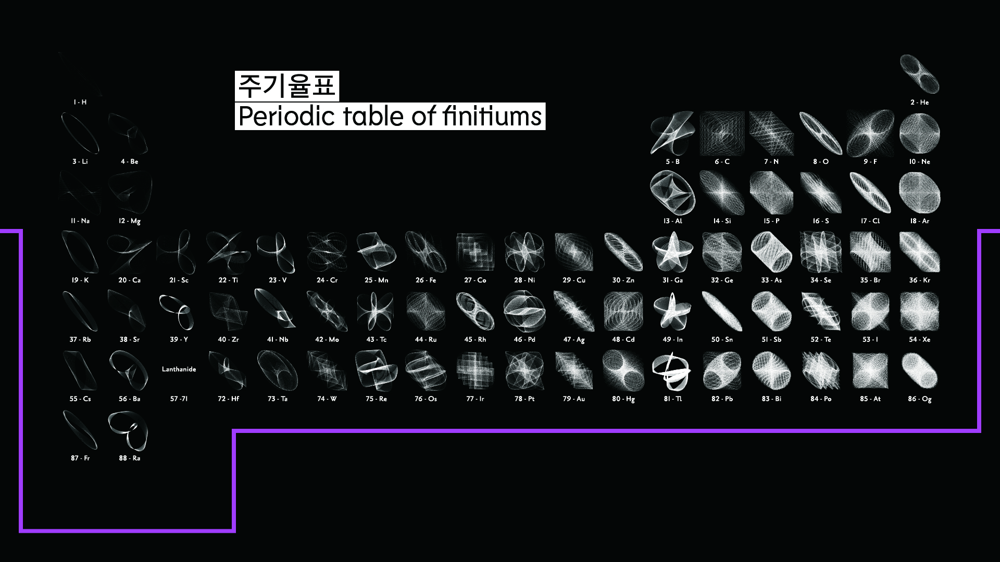

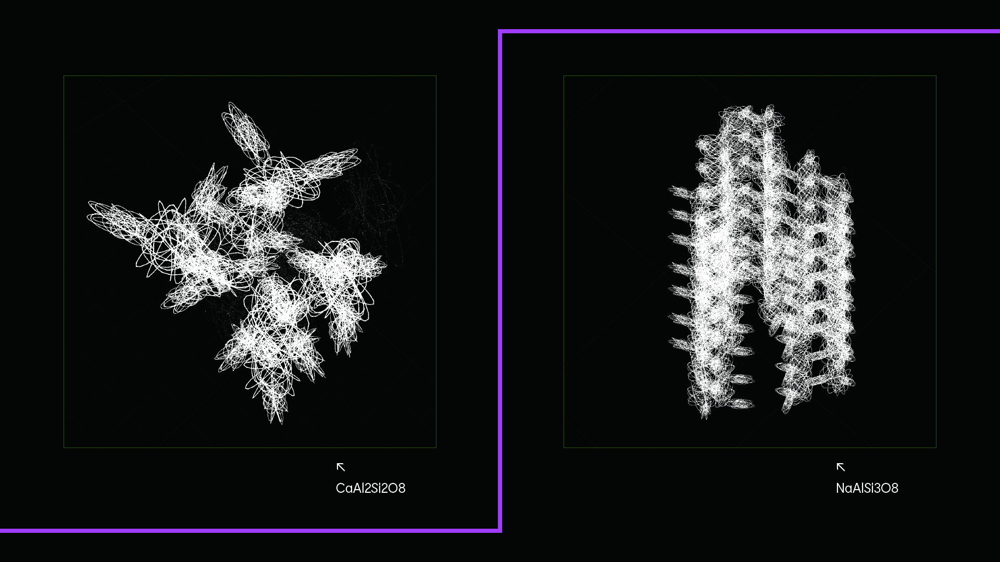
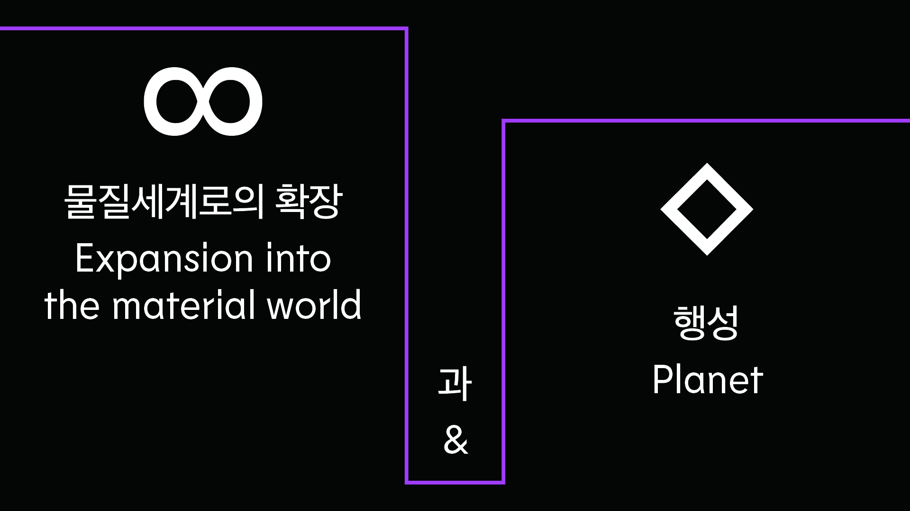
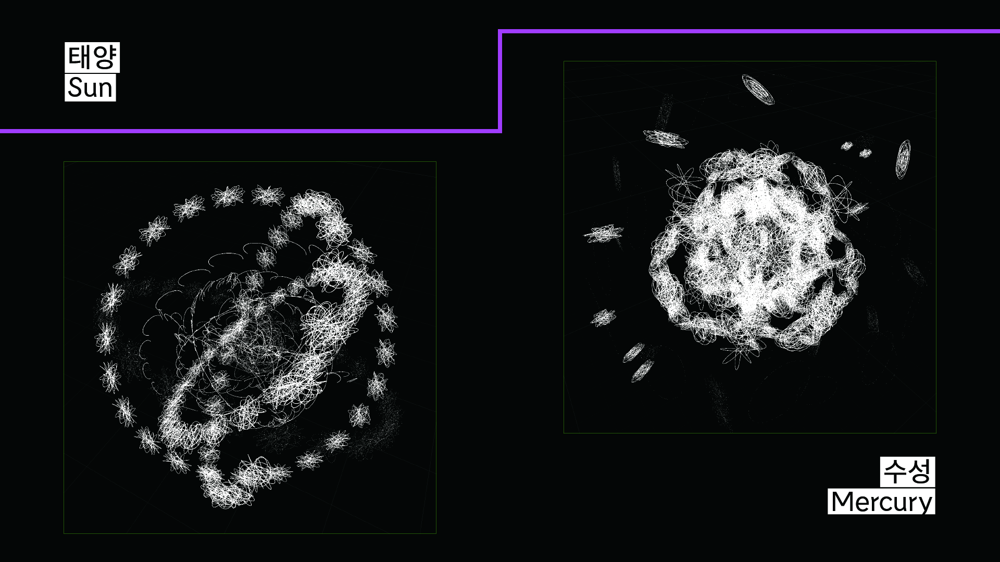
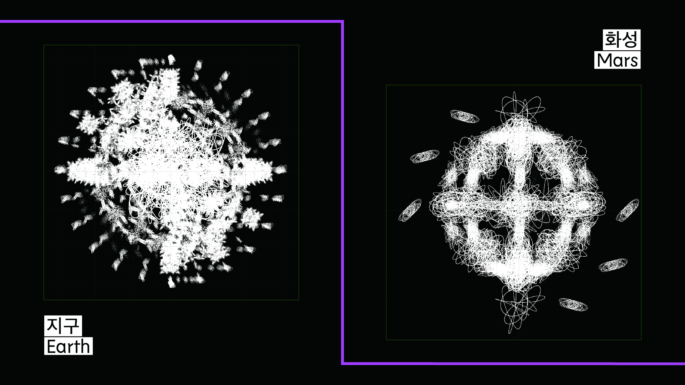
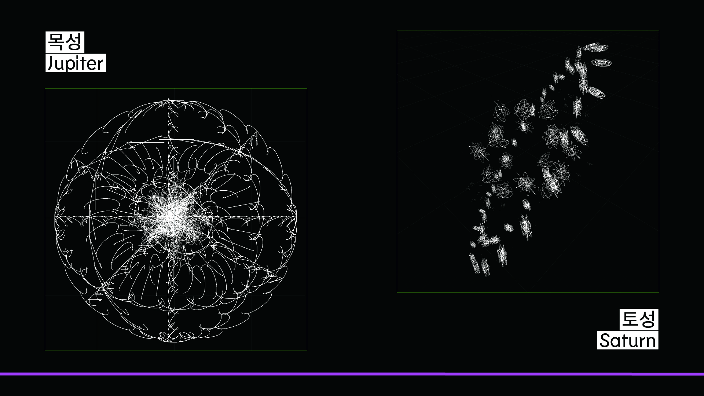
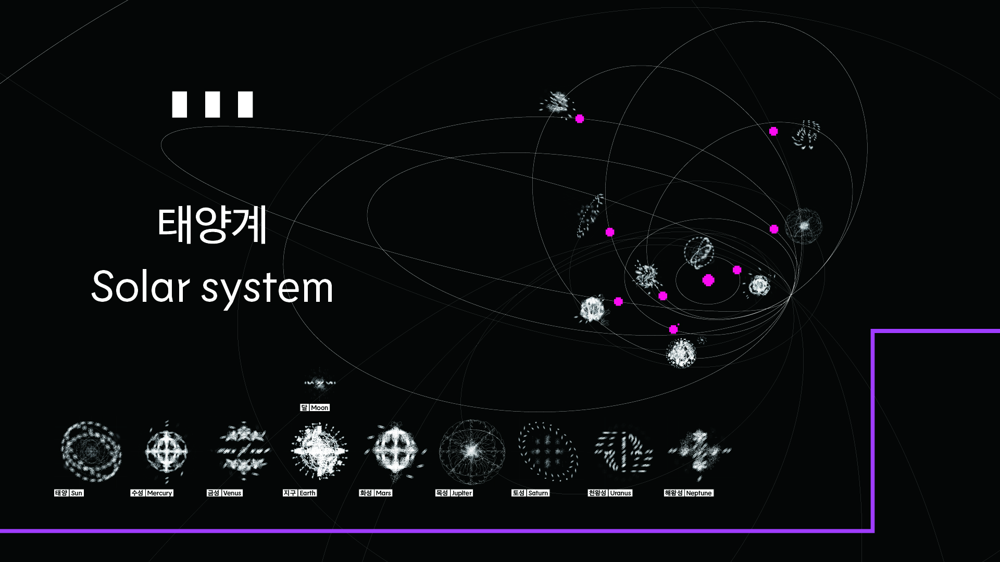
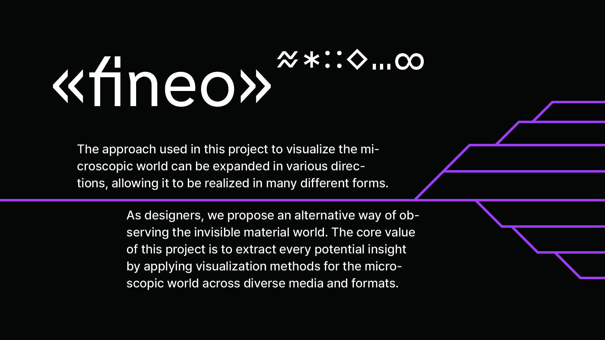
Fineo, Translated Universe is a VR installation that maps data about chemical elements into moving spatial forms informed by harmonograph functions. It reinterprets scientific relationships as an explorable visual system.
The visitor travels through an abstract constellation of element-derived forms, encountering relationships through distance, motion, and scale rather than by reading a static table.
I conceived, directed, and technically produced the Unity VR visualization, choosing the data mapping, harmonic visual language, and spatial presentation.
I designed it as an experiential interpretation, not a scientific simulation of atomic physics. Harmonic geometry makes numerical differences perceivable as patterns without pretending that the imagery is a literal physical model.















